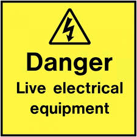
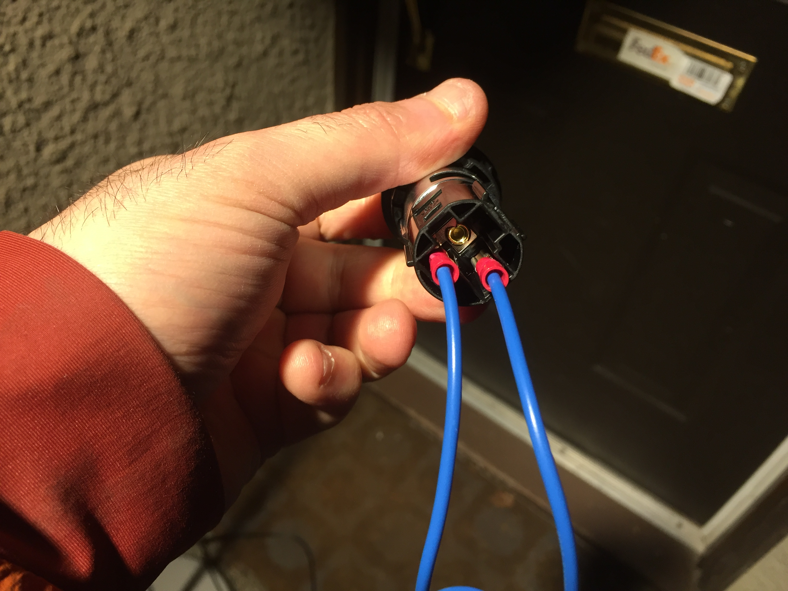
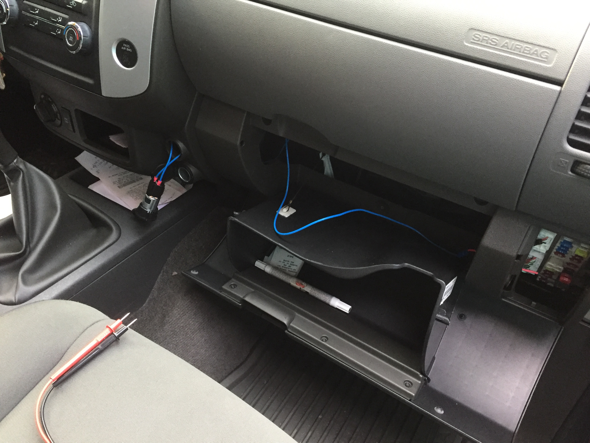
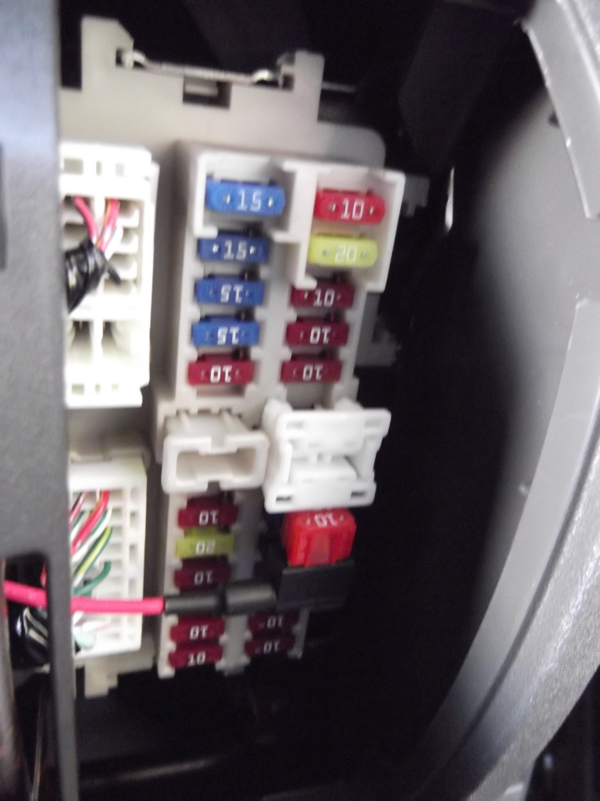
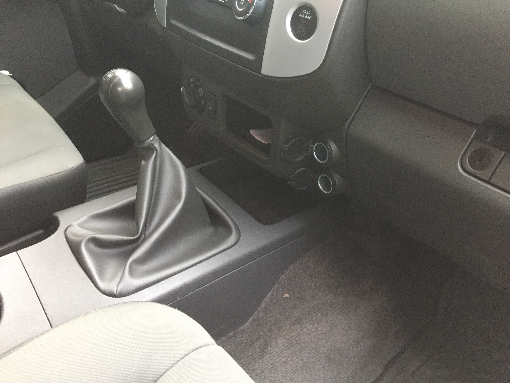

XTerra Switched outlet
For some reason truck and SUV 12v outlets are always hot. This is true in my wife’s F150 and my 2010 Nissan XTerra. This is a bit of annoyance since I’d like to use a bluetooth transmitter to connect my iPhone to the radio. Thankfully, it’s fairly easy to add a second, switched outlet in the XTerra.
The short of it is:
- acquire OEM cigarette outlet
- wire it via an add-a-fuse
As far as electrical mods go this one is very mild and simple. The biggest difficulty for me was managing to sneak a bolt behind the glove box to ground the connection.
Please note. This mod involves electricity. Electricity is dangerous. It could destroy your vehicle and potentially kill you.
Step 1: Acquire all of the parts
This is not a complete list since I’ve had some of this stuff already.
What’ you’ll need:
- Nissan OEM part 253369B92A, the ring protector. This is the plastic piece that clips into the dash and holds the metal part of the cigarette lighter. Can be purchased at NissanPartsWarehouse.com
- Nissan OEM part 25339ZV60A, the metal part of the cigarette lighter. Can be purchased NissanPartsWarehouse.com.
- One add-a-fuse
- Some automotive wiring. 18 gauge wiring should be fine.
- (1) Ring terminal for the ground wire.
- (2) Blade terminals to connect on the back of the cigarette lighters
Step 2: Putting it all together
This is actually quite straightforward.
-
Add a necessary length (about a foot?) to the add-a-fuse wire and crimp it. Add a blade terminal to the other end. This is the hot wire. It will connect to the centre pin of the cigarette lighter.
-
For the ground wire, take a short length, put a ring terminal on one end, and a blade terminal on the other.
-
Connect blade terminals to the cigarette lighter. Centre is hot and goes to the fuse box. Side pin is ground. I should’ve probably used two different colours.
 -
Thread the wires through the exposed mounting hole. DO NOT push the cigarette lighter all the way in until you’ve confirmed that everything is wired correctly.
 -
On the right, plug your add-a-fuse into the heated seats fuse position. It’s unused and is only live when the engine is turned on (not my picture)
 -
On the left, ground the connection to a metal post directly behind cigarette lighter hole. This will be difficult because it’s tight in there. I used a small nut and bolt.
-
Finally test with a multimeter to ensure that everything is correct and pop the cigarette lighter all the way in.

Closing thoughts
Overall, not a difficult mod at all. Requires some wiring knowledge. The total cost was about $20 for the OEM cigarette lighter parts, another $10 for add a fuse and the rest of the miscellanea I had at home. Not too bad.
The majority of the info came from this post: Added A Switched Dash Outlet - Second Generation Nissan Xterra Forums (2005+)